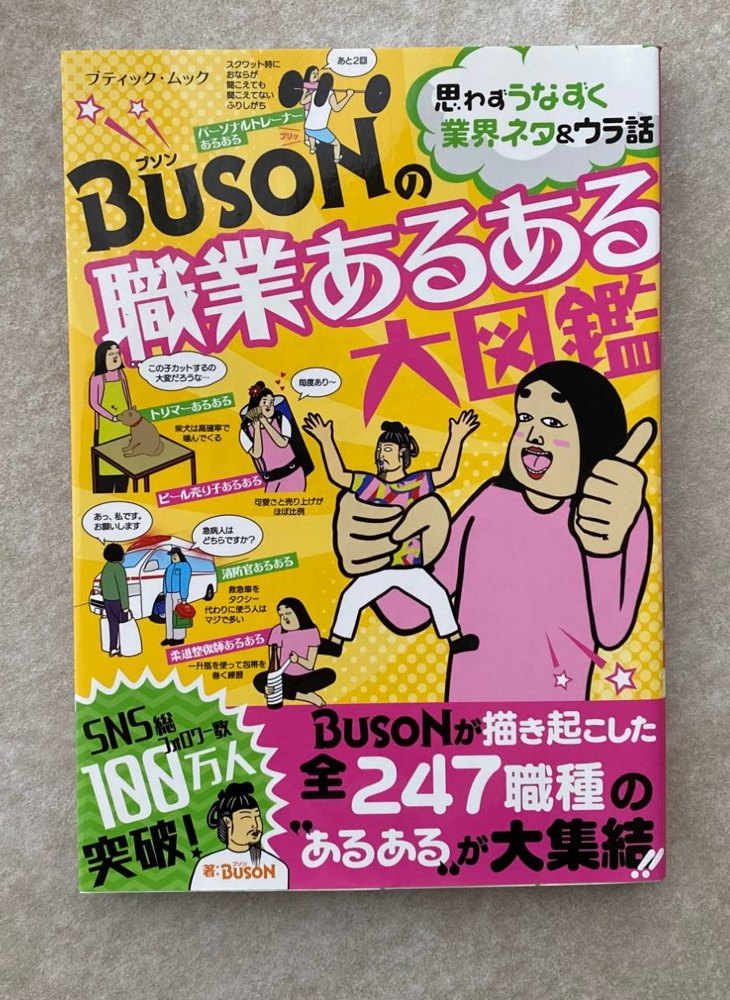

THEME 01
失敗は、
成功のもとを貯めている
訪問販売、ネット小説、1年半で登録者230人のYouTube、誰にも見せなかった小説。 10年間の失敗が、夢が叶ったあと全部つながった実話から、 挑戦し続ける力と、失敗の生かし方をお話しします。
- おすすめ
- 新入社員・若手社員研修／学校
- 持ち帰れること
- 失敗したときに「才能のせい」にせず、次の材料に変える考え方
SCENE
THEMES
ご要望に合わせて、組み合わせや内容の調整もできます。
THEME 01
訪問販売、ネット小説、1年半で登録者230人のYouTube、誰にも見せなかった小説。 10年間の失敗が、夢が叶ったあと全部つながった実話から、 挑戦し続ける力と、失敗の生かし方をお話しします。
THEME 02
イラストの経験がなかった元消防士が、独学のイラストでSNS総フォロワー100万人超へ。 半年結果が出なかった時期に何を変えたのか。 伝わる発信の考え方を、実例とともにお話しします。
THEME 03
『BUSONの職業あるある大図鑑』の著者が、仕事の「あるある」から、 その仕事ならではの誇りと面白さを掘り起こします。 会場の皆さんの仕事のあるあるも、一緒に見つけます。
ONLY BUSON
講演の中で、会場のみなさんに職業を聞いて、その仕事の「あるある」をその場で描きます。 事前に御社の「仕事あるある」をお聞きして、1枚の絵に描き上げることもできます（ご希望に応じて）。
247職種のあるあるを描いてきた『BUSONの職業あるある大図鑑』の著者ならではの演出です。

SPEAKER
イラストレーター・漫画家・株式会社TAKER 代表取締役。元救急救命士。 代表作「しきぶちゃん」は書籍化・テレビ出演・企業コラボなど多方面で展開。
長崎県五島市生まれ。剣道の推薦で高校へ。将来の夢もなく、進路は「友達が行くから」「名前がかっこいいから」で決めていました。
救急救命士の専門学校3年のとき、本屋で偶然手にした1冊に衝撃を受け、「自分も本を出す」という人生初の夢ができます。
救急救命士・消防士として働きながら、ネット小説、YouTube、小説の執筆と挑戦しては挫折。支えは、親友からもらった1通の手紙でした。
2016年に独学でイラストを始め、SNSで支持を獲得。消防を辞め、しきぶちゃんで書籍化の夢を叶えます。
しまい込んだ小説の経験は漫画に、挫折したYouTubeの経験は次の挑戦に。ライブドアブログ OF THE YEAR 2019 グランプリ、SNS総フォロワー100万人超へ。
学力も学歴もなかった僕にあったのは、
本屋で立ち読みした1冊と、親友の手紙だけでした。
RECORDS
PRICE & FLOW
講演料はお問い合わせください
講演の内容・時間・会場により異なります。ご予算をお知らせいただければ、内容をご提案します。
交通費・宿泊費は講演料とは別にご負担いただいています。
60〜90分が中心です。質疑応答や対談形式も承ります。
できます。Zoom などのオンライン会議ツールでの講演も承ります。会場とオンラインを同時につなぐ形もご相談ください。
全国どこでも伺います。交通費・宿泊費は講演料とは別にご負担いただいています。
できます。講演とあわせて、社内報・採用・周年記念などに使えるイラストや「あるある漫画」の描き下ろしも承ります。まとめてご相談ください。
CONTACT
下記の内容をメールでお知らせください。2〜3営業日以内にご返信します。